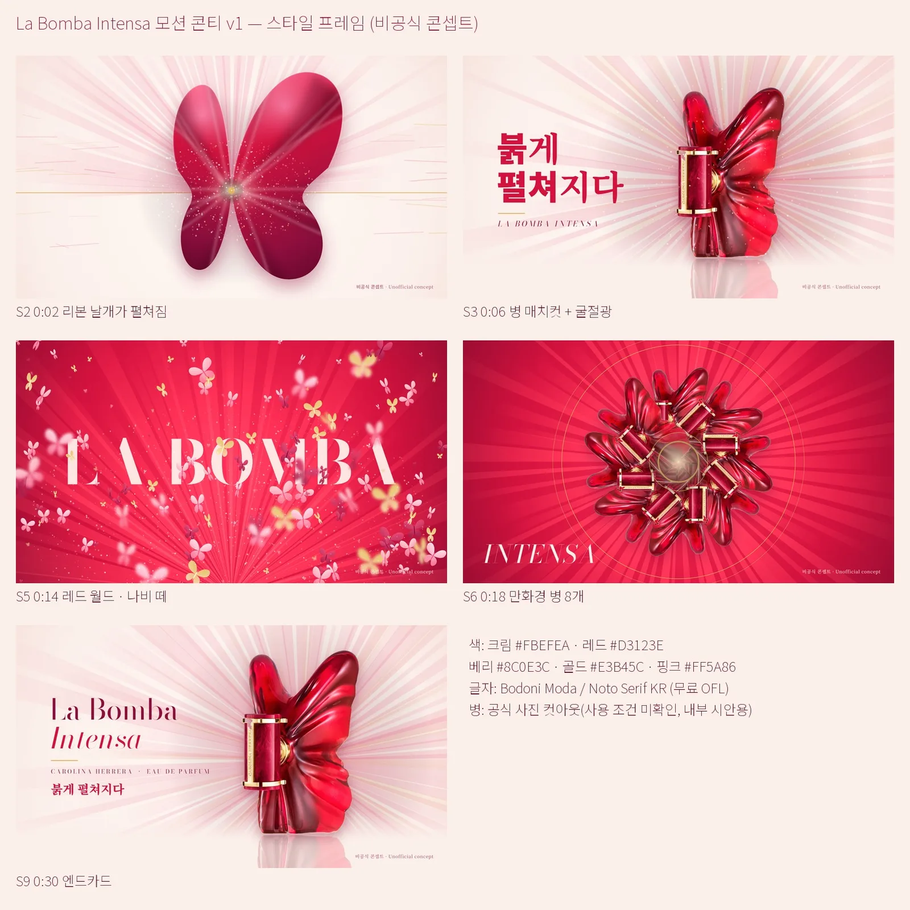
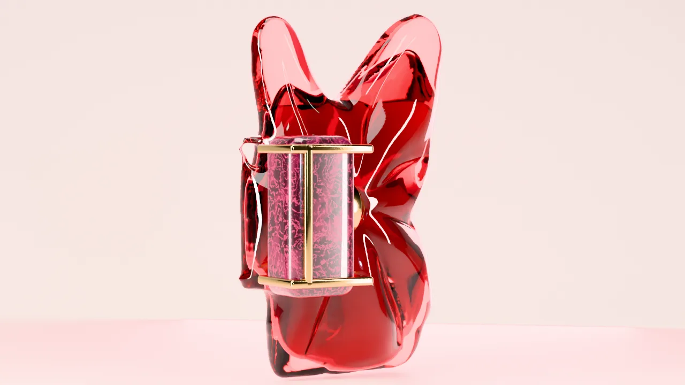
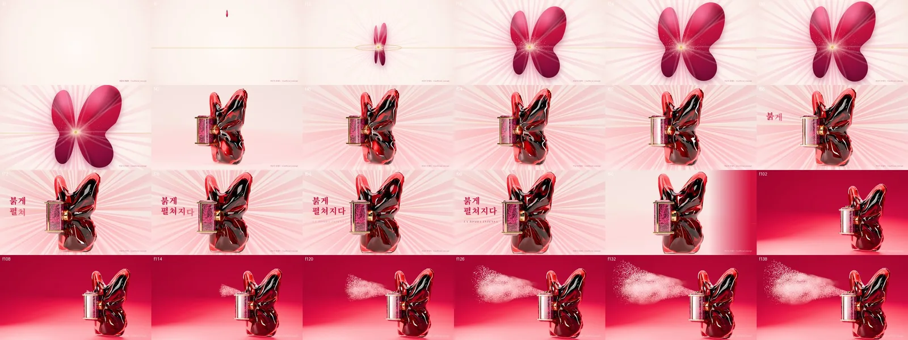

뷰티·향수3D·모션그래픽 광고콘티·프리비즈럭셔리·감성32초 본편 v1(무음) · 유리 질감·소리를 더할 v2 준비 중
붉게 펼쳐지다
Carolina Herrera La Bomba Intensa
한 방울의 붉은 향이 실크 리본처럼 펼쳐져 나비형 병이 되고, 분사 한 번에 화면 전체가 붉은 나비로 번지는 32초 모션그래픽. 병의 '접힌 날개' 구조를 모션의 규칙으로 썼어요.
32초 본편 v1 · 1920×1080 · 무음(음악·효과음은 아직 없음) — 직접 만든 3D 병, 비공식 콘셉트
32초본편 v1 · 768프레임
16마디9장면 콘티
6초시험본 (승인)
브리프
같은 제품의 AI 실사판(v5)에서 지적된 인위적 인물·AI 질감을 피하려고, 사람 없이 병의 형태만으로 이야기를 만들었다.
콘셉트
접힘 → 펼침. 날개 주름이 금색 중심으로 모이는 병의 구조를 리본·나비·만화경 모션으로 반복한다.

스타일 프레임
3D 병
공식 사진은 한 시점뿐이라 회전·접사가 안 됐다. 드레이프 주름을 직접 설계해 Blender로 병을 다시 만들었다.

시험본

Gallery
갤러리


Drag ↔ / Scroll ↓
Films
영상 모음
내가 한 일
콘셉트·콘티3D 병 모델링 (Blender)2D 모션그래픽 합성검수
사용한 도구
Blender (Cycles)HTML·Canvas + 헤드리스 ChromePythonffmpeg
모든 광고는 실제 브랜드와 관계없는 개인 비공식 콘셉트 작품입니다.
NEXT
뷰티·향수AI 영상 광고키비주얼·포스터콘티·프리비즈인물·스토리
붉게 펼쳐지다 — 실사판
Carolina Herrera La Bomba Intensa
외출 준비 → 향수 분사 → 행사 입장. 같은 인물의 저녁을 32초로 보여 주는 AI 영상 광고예요. 버전마다 받은 피드백을 하나씩 반영해 v5까지 만들었어요.
케이스 스터디 보기 →